Minhwa is Korean folk painting — the art of ordinary people of the Joseon dynasty. Free from the strict conventions of court painting, it speaks plainly of what people wished for, and every flower and butterfly is a word in that language of hope.
Hwajeop-jihui means the joy of flowers meeting butterflies. Every work here is painted on sunji, Korean mulberry paper, in bunchae and bongchae — powdered and stick mineral pigments layered many times over. A single painting can take tens or even hundreds of hours.
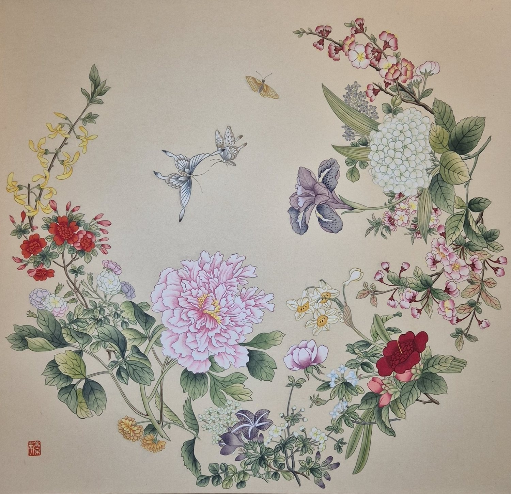
Joy of Flowers and Butterflies화접지희
A great ring of flowers, beginning at the forsythia and passing through hydrangea and iris to the rugosa rose. Gathering blooms that could never share a season is a long-standing habit of minhwa — a wish that good fortune arrive in every season, without end. The pink peony at its heart stands for wealth and honour; the three butterflies drifting into the open centre, for joy and long life.
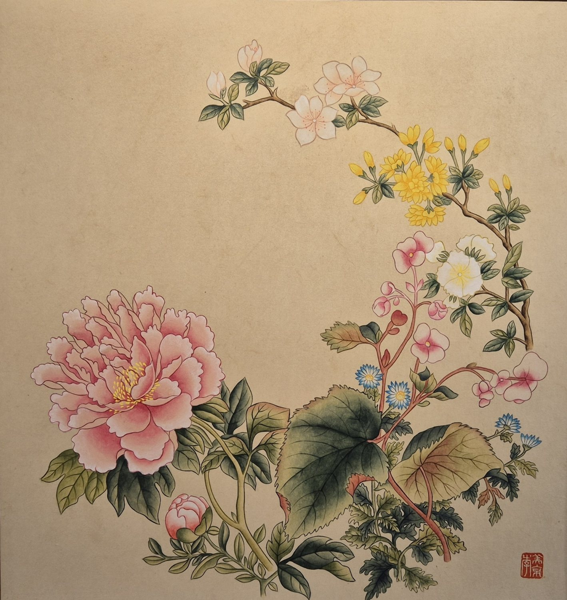
Joy of Flowers and Butterflies화접지희
A single pink peony at lower left anchors the surface, and the branch crosses to the upper right, opening into rugosa rose and forsythia. The peony is wealth and honour; the two spring flowers, the fortune still to come. Nearly half the paper is left bare — that is the space a butterfly will fly into, and why the painting is called the joy of flowers meeting butterflies.
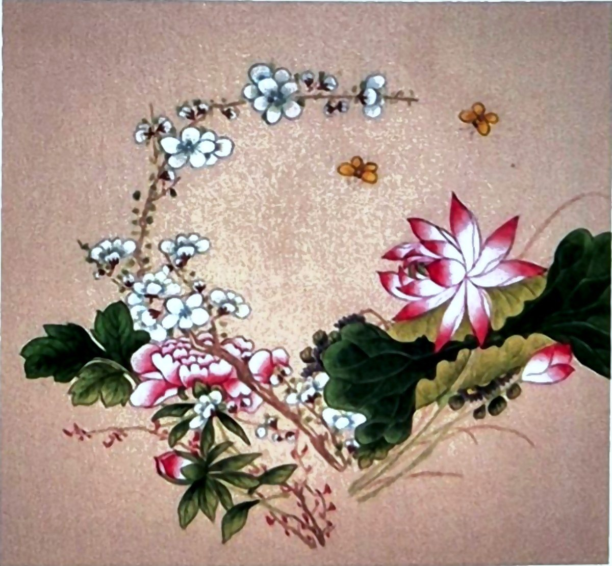
Flowers, Grasses and Insects화훼초충도
A branch dense with small white blossoms arcs across the top, and beneath it a cluster of pink double flowers and a single red bloom take their place. Chochung-do is the painting of grasses and insects. Insects lay many eggs, so they stand for a flourishing family line — and raising what lies underfoot to the subject of a painting is the spirit of the genre.
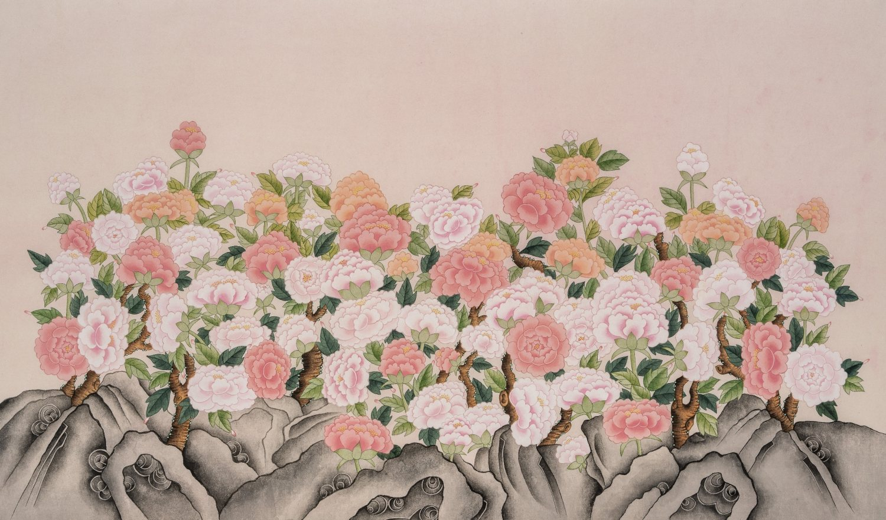
Peonies and Scholar's Rock모란괴석도
The largest work in the exhibition. A long ink-painted scholar's rock supports the lower edge, and above it peonies in pink and white break open all at once. The peony means wealth and honour; the rock, worn by wind and rain yet unchanged in form, means long life. Painted together they were hung at weddings, housewarmings and the birthdays of elders.
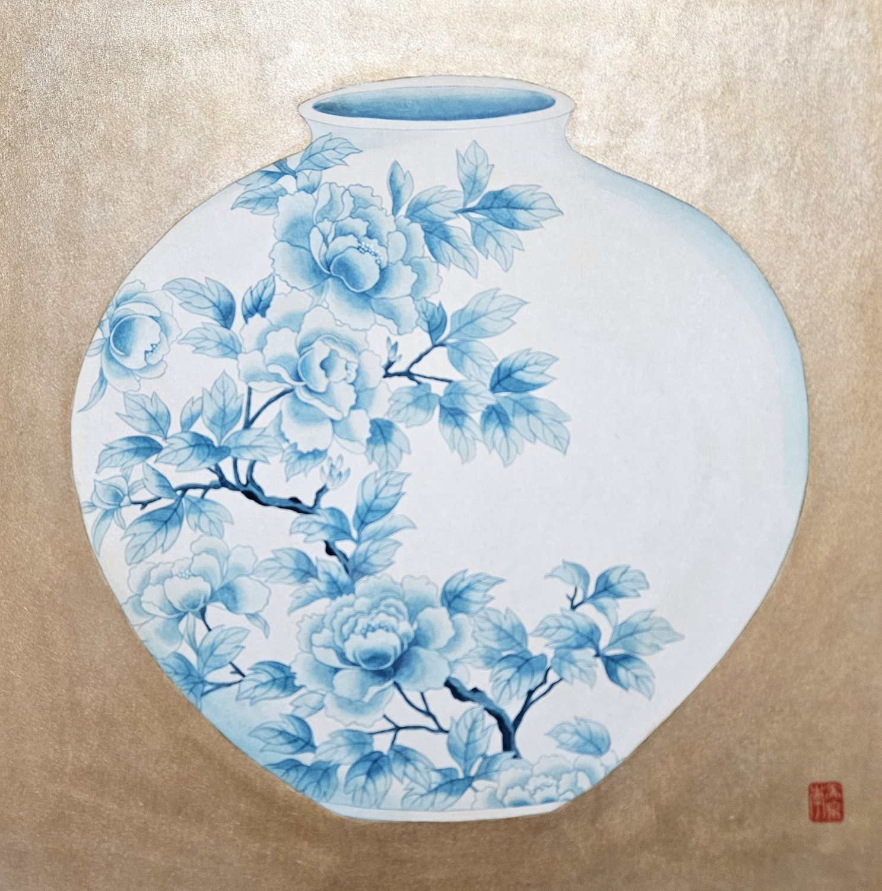
Peony Moon Jar모란달항아리
A white porcelain moon jar on a golden ground. It is never quite symmetrical, and that slight imbalance is exactly what gives it generosity — the particular virtue of Joseon porcelain. Peony vines are laid across its ivory body in cobalt blue, so the painting gathers wealth and honour into a vessel and brings it into the house.
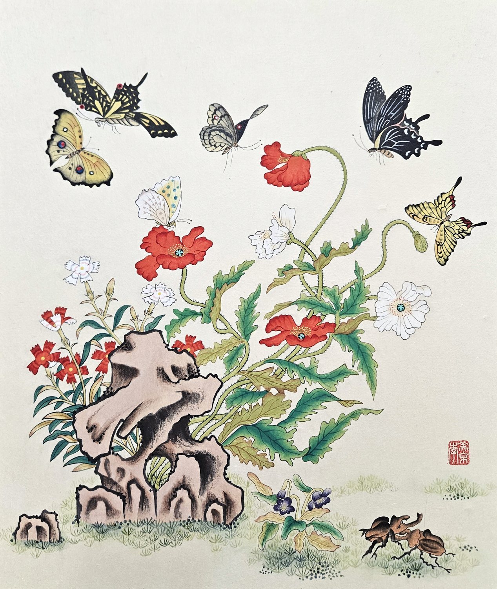
Scholar's Rock, Flowers and Butterflies괴석화접도
Red poppies and pinks open beside a scholar's rock, and seven butterflies hover above, no two with the same wings. Look for the pair of stag beetles and the violet hidden in the grass below. The rock asks for long life, the pinks for hair that never greys, the egg-laying insects for children to follow — everything a person might wish for, stacked into one small painting.
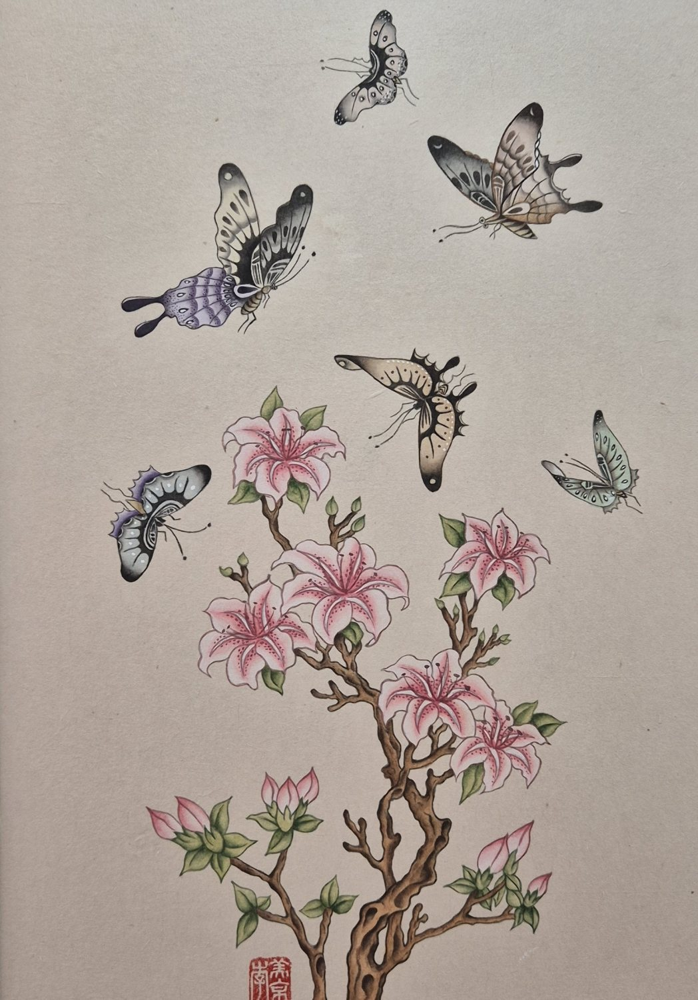
Flowers and Butterflies화접도
A single azalea branch rises from below, and above it seven butterflies scatter upward into open sky. A painting of butterflies finding flowers means a good bond and love between husband and wife; it was often given at weddings. The smallest work in the exhibition, and the one with the clearest direction.
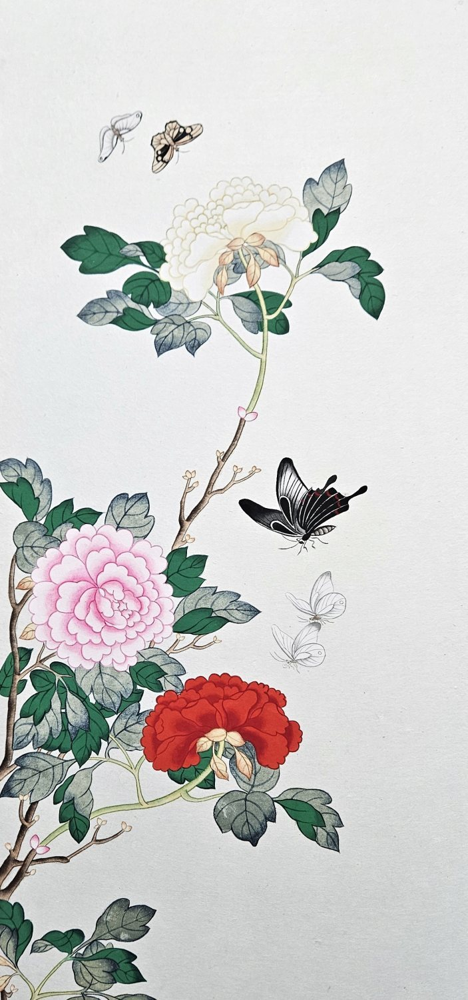
Peonies and Butterflies모란화접도
The proportions of a single panel taken from a folding screen. Crimson, then pink, then white — the peonies ascend in turn and carry the eye with them. Painting the flower three times in three colours asks that wealth and honour not come once but continue; the four butterflies spaced along the empty right margin add long life to the wish.
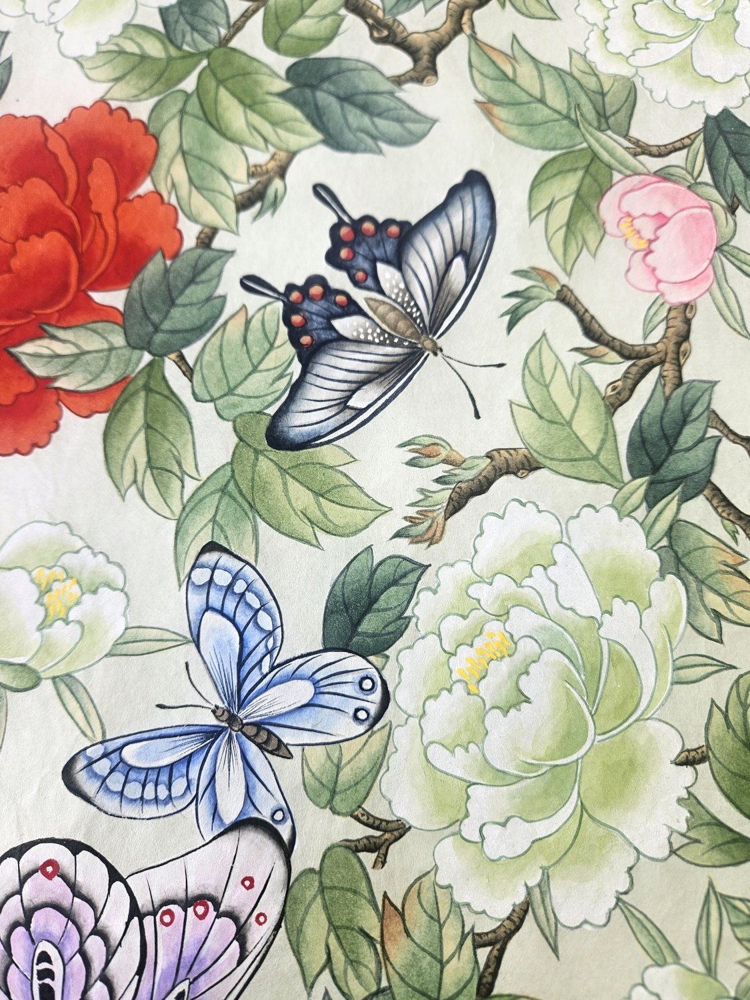
Peonies and Butterflies모란화접도
Flowers and leaves fill the surface to the very edge, leaving no ground bare. A composition packed this full was long understood as fortune brimming over. Four butterflies sit half-hidden among the leaves, not all visible at once — some good fortune, it seems, only shows itself to those who look.
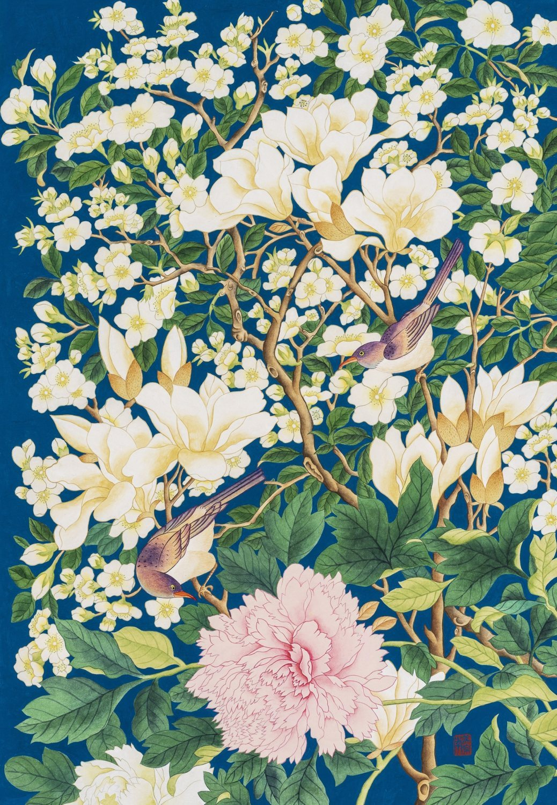
Magnolia, Peony and Birds옥당부귀도
The title is the meaning. The magnolia is ok, jade; the white flowering branches are dang, the hall; the peony below is bugwi, wealth and honour — together, a wish that prosperity dwell in a household as precious as jade. The two birds among the branches stand for marital harmony, and are never painted singly. Covering the entire ground in costly blue pigment was itself a way of showing preciousness.
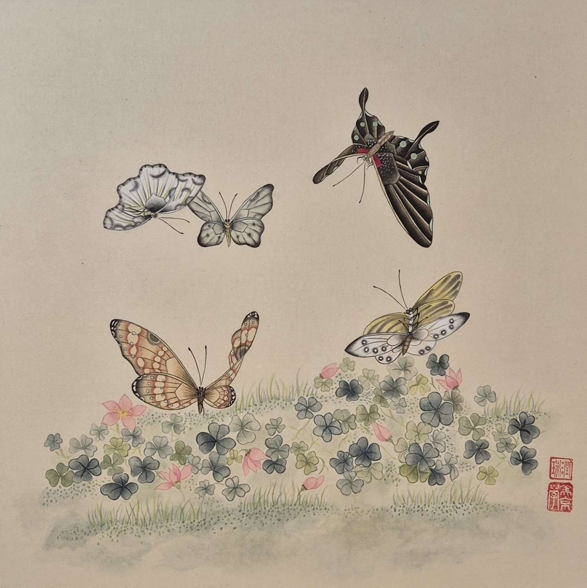
Butterflies over Clover남계화접도
The quietest painting in the exhibition. Clover lies low across a silvered ground with four butterflies suspended above it — no large blooms, no strong colour. Which is why the grain of each wing and every stroke in the grass stays visible; this one rewards standing close. Clover is not a motif of traditional folk painting, and that is where a contemporary sensibility enters an old form.
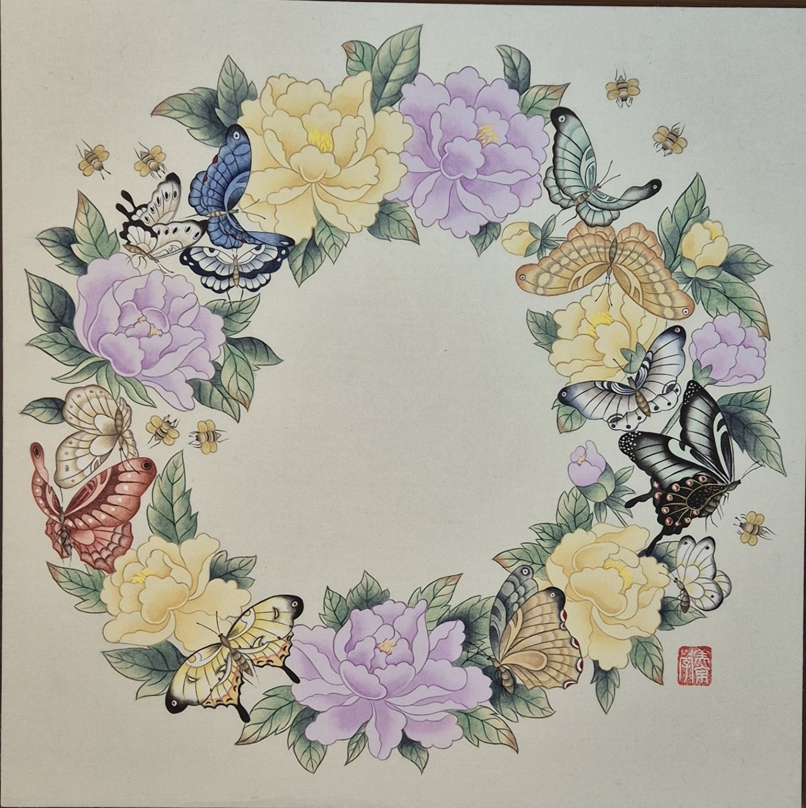
Flower and Butterfly Wreath화접지희 리스
Pale yellow and lilac peonies alternate around a full circle. The Western wreath, rebuilt in the materials and motifs of minhwa: a ring without beginning or end, asking that fortune come round again. No two of the eight butterflies are alike, and the bees among them stand for harvest. The empty centre belongs to whoever stands in front of the painting.
- Dates
- 28 July – 3 August 2026
- Admission
- Free
- Venue
- Gallery Gongan 35